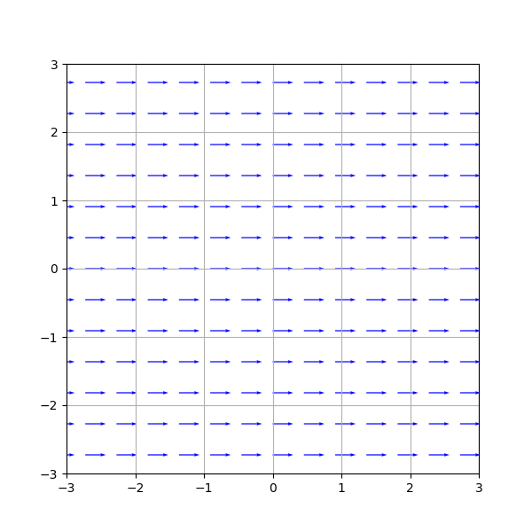
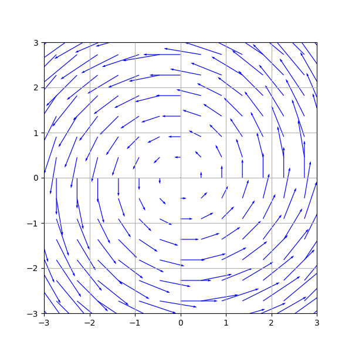
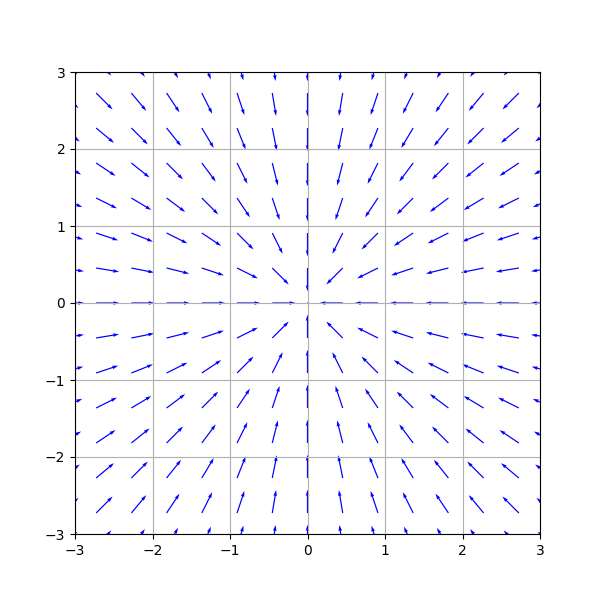

\(
\def\sc#1{\dosc#1\csod}
\def\dosc#1#2\csod{{\rm #1{\small #2}}}
\newcommand{\dee}{\mathrm{d}}
\newcommand{\Dee}{\mathrm{D}}
\newcommand{\In}{\mathrm{in}}
\newcommand{\Out}{\mathrm{out}}
\newcommand{\pdf}{\mathrm{pdf}}
\newcommand{\Cov}{\mathrm{Cov}}
\newcommand{\Var}{\mathrm{Var}}
\newcommand{\ve}[1]{\mathbf{#1}}
\newcommand{\ves}[1]{\boldsymbol{#1}}
\newcommand{\mrm}[1]{\mathrm{#1}}
\newcommand{\etal}{{et~al.}}
\newcommand{\sphere}{\mathbb{S}^2}
\newcommand{\modeint}{\mathcal{M}}
\newcommand{\azimint}{\mathcal{N}}
\newcommand{\ra}{\rightarrow}
\newcommand{\mcal}[1]{\mathcal{#1}}
\newcommand{\X}{\mathcal{X}}
\newcommand{\Y}{\mathcal{Y}}
\newcommand{\Z}{\mathcal{Z}}
\newcommand{\x}{\mathbf{x}}
\newcommand{\y}{\mathbf{y}}
\newcommand{\z}{\mathbf{z}}
\newcommand{\tr}{\mathrm{tr}}
\newcommand{\sgn}{\mathrm{sgn}}
\newcommand{\diag}{\mathrm{diag}}
\newcommand{\Real}{\mathbb{R}}
\newcommand{\sseq}{\subseteq}
\newcommand{\ov}[1]{\overline{#1}}
\DeclareMathOperator*{\argmax}{arg\,max}
\DeclareMathOperator*{\argmin}{arg\,min}
\newcommand{\data}{\mathrm{data}}
\newcommand{\N}{\mathcal{N}}
\newcommand{\Hil}{\mathcal{H}}
\)
Vector Function as Vector Field
OK. So far we know how to do generative modeling from one isotropic Gaussian to another.
- One shot transformation version:
\begin{align*}
\varphi(x) = \frac{\sigma_1}{\sigma_0}(x - \mu_0) + \mu_1.
\end{align*}
- Continuous version:
\begin{align*}
\phi_t(x) = \frac{\sigma_t}{\sigma_0} (x -\mu_0) + \mu_t
\end{align*}
for any differentiable function $\mu_t$ and $\sigma_t$ that goes from $(\mu_0, \sigma_0)$ to $(\mu_1, \sigma_1)$. In particular,
\begin{align*}
\phi_t = (1-t) \mrm{id} + t \varphi
\end{align*}
is the "straight" flow.
We still don't know how to solve the problem in general. To do so, we need a more sophisticated way to generate a flow.
The way people do this is by integrating a time-dependent vector field.
But hey...
- What does "integrating" mean?
- What is a "time-dependent vector field?"
Let's start with what a vector field is.
We said in the very first slide that there are two interpretations of a vector function $\Real^d \ra \Real^d$.
- Point transformation.
- Vector field.
So, a vector field is just a vector function. We see it as associating a $d$-dimensional vector to each point in $\Real^d$.
For vectors, we will typically use letters like $u$, $v$, or $w$ instead of $f$, $g$, and $h$.
When we visualize a vector field, we draw a lot of arrows on the space.
Here's a vector field.
\begin{align*}
v(x) = (1,0)
\end{align*}
And here's what it looks like.

Note that the arrows are not to scale.
Here's another vector field.
\begin{align*}
v(x) = \begin{bmatrix} -x^2 \\ x^1 \end{bmatrix}
\end{align*}
And here's what it looks like.

Here's another one.
\begin{align*}
v(x) = \frac{-x}{\|x\|}
\end{align*}
(This vector field is undefined at $0$.) Here's what it looks like.

[<<]
[Top]
[>>]